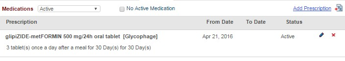
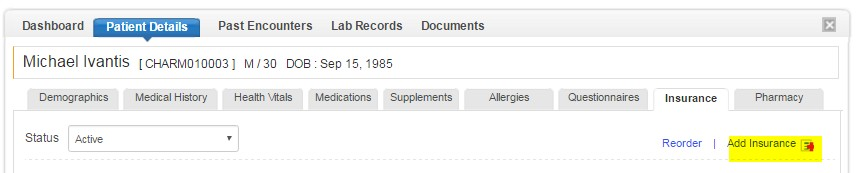

Patient Records
Patient Demographics
- Go to 'Patients' tab, and click on the patient whose demographic details you want to view/edit.
- Click on 'Patient Details' and select 'Edit demographics' option.
- Make the required changes and click on 'Save'
Medical History
- Go to 'Patients' tab and select the patient.
- Click on 'Patient Details' tab
- Select 'Medical history' tab
- Select 'View Active' option from the drop box next to 'Diagnoses History', to view the active list of diagnosis.
- Select 'View History' to view the past medical history of diagnosis.
Health Vitals
- Go to 'Patients' tab
- Click on the Patient profile whose health vitals you want to enter
- Click on 'Patient Details'
- Further, click on 'Health Vitals' tab and then select 'Add vitals' link.
- Choose the date of entry from the 'Date' field and enter the health vitals of the patient, viz., Height, Weight, Blood Pressure, etc. and click on 'Save'
Plot Health Vitals
- To plot the health vitals, Click on the 'Plot' option.
- Select the parameter you want to plot from the drop box. The graph for the parameter will be plotted.

- You can also import the past health vitals of the patient using the 'Import Vitals' option.
- To do this, create an Excel sheet with the following parameters as comma separated values. The order should be Date[dd/mm/yyyy], Weight (kgs), Height (cms), Head Circuference (cms), BP Systolic, BP Diastolic, Pulse.
- Browse to the Excel sheet and click on 'Import' to import the past health vitals.
Medications
- Go to 'Patients' and select the patient
- Click on 'Patient Details'
- Click on 'Medications' tab and the click on 'Add Medication' link.
- Search for the drug name from the master list and click on 'Add' to add the medication.
- If you could not find the drug in the master list, you can add it as a 'Custom Drug'
- The medication will be added.
- Similarly, prescription can be added from the 'Add Prescription' option.
 - Enter the details of the precription.
- There are two ways in which you can add the dosage, 'Default Dosage' and 'Custom Dosage'. Choose the dosage option according to your need.
- Click on 'Add' to add the presciption
Allergies
- Go to 'Patients' tab and select the patient
- Select 'Patient Details'
- Click on 'Allergies' tab and the click on 'Add allergies' link.
- If the patient is allergic to any drug/food/environment, it can be addded here.
- Add the allergens to the 'Allergen' field and choose the 'Type' of allergy. You can also add more details like when the allergy was observed, severity of the allergy, etc.
- Click 'OK' to add the allergy for the patient.
Questionnaires
- Go to 'Patients' tab and select the patient
- Select 'Patient Details'
- Click on 'Questionnaires' tab.
- You can view all the filled up questionnaire by the patient.
Insurance Details
- Go to 'Patients' tab and select the patient whose insurance details has to be filled in.
- Click on 'Patient Details' and select 'Insurance' tab
- Click on 'Add Insurance' option.
 - Key-in the insurance details of the selected patient.
- The insurance details will get added.
Pharmacy
- Go to 'Patients' tab and select the patient
- Click on 'Patient Details' and select 'Pharmacy' tab.
- Click on 'Add e-Rx Pharmacy' option to add the pharmacy
- Search for the pharmacy name and add it to the list of e-Rx pharmacies.
- You can also add a custom pharmacy using the 'Add Custom Pharmacy' option or 'Select from Pharmacy Directory'
- The custom pharmacies will get added under the head 'Other Pharmacy'
Patient Facesheet
Practitioner can get a quick overview about the patient by viewing the patient's 'Face Sheet'
- Go to Patient Dashboard and click on 'Fact Sheet' to view their summary.
- You can customize the fact sheet, by clicking on the gear icon.
- Select the sections you want in the Face Sheet, by selecting the check boxes.
- You can also print the fact sheet by clicking on the download icon.
Timeline View
Timeline view shows the patient's medical records in a pictorial fashion. Records included in the timeline view are Appointments, Intake Forms, Encounters, Diagnoses, Prescription, Lab Orders, Image Orders, Referrals, Lab Results, Image Results and Messages.
- Go to Patient Dashboard. Click on the 'Timeline' tab.
- The timeline will appear as shown below. Records are shown in the chronological order with recent entry on the top.
- You can also filter a particular section of the timeline you want to view.
TagCloud View
Tagcloud view provides a bird's eye view of the patient's medical data. It is a color coded visual representation of Diagnoses, Prescriptions, Supplements, and Abnormal Lab Record parameters. Different patient data points are depicted in different font sizes based on calculated weights using custom algorithms.
- Go to patient dashboard and click on 'Tag Cloud' option to view the tag cloud.
- Tag Cloud can be regenerated by choosing the various parameter types like Rx, Diagnoses, Supplements, Allergies, Lab, etc.